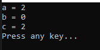
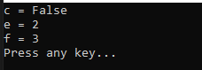
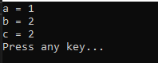

こんにちは。明月です。
この投稿はC#の演算子に関する説明です。
我々がパソコンを使う時にゲームもするし、様々な業務のためにデータを格納するかプログラムを作りますが、実は性能がすごくよい計算機です。
つまり、グラフィックを描画や業務のためのプログラムはすべて計算により出力することです。なので、プログラム中で一番に重量なことは演算です。
演算とは一般数学の足す、引く、掛ける、分ける計算と同じです。 でも、プログラムは単純な数学の計算だけではなく、ビットの計算、論理計算もあります。
| 演算子 | 使用方法 | 説明 |
|---|---|---|
| 算術演算子 | ||
| + | a + b | 足す |
| - | a - b | 引く |
| * | a * b | 掛ける |
| / | a / b | 分ける |
| % | a % b | 分けるのあまり |
| ++ | ++a, a++ | 値を1を増加する。(前位、後位演算子) |
| -- | --a, a-- | 値を1を減少する。(前位、後位演算子) |
| 関係演算子 | ||
| > | a > b | aがbより大きいならtrueを返却、小さいや同じならfalseを返却 |
| >= | a >= b | aがbより大きいか同じならtrueを返却、小さいならfalseを返却 |
| < | a < b | aがbより小さいならtrueを返却、大きいか同じならfalseを返却 |
| <= | a <= b | aがbより小さいか同じならtrueを返却、大きいならfalseを返却 |
| == | a == b | aとb同じならtrueを返却、違いならfalseを返却 |
| != | a != b | aとbが違いならtrueを返却、同じならtrueを返却 |
| ビット演算子 | ||
| << | a << b | 整数aの2進数値を左にb程移動して余りは0に設定 |
| >> | a >> b | 整数aの2進数値を右にb程移動して余りは正数は0に負数は1に設定 |
| & | a & b | aとbをand計算 ex) 4(0100) & 5(0101) = 4(0100) |
| | | a | b | aのbをor計算 ex) 4(0100) | 5(0101) = 5(0101) |
| ^ | a ^ b | aとbをxor計算 ex) 4(0100) ^ 5(0101) = 1(0001) |
| 論理演算子 | ||
| && | a && b | AND演算子、つまりaとbがブール値に定義していてtrue && trueならtrue、true && falseならfalseの値を返却 |
| || | a || b | OR演算子、つまりaとbがブール値に定義していて true || trueならtrue、true || fasleならtrueの値を返却 |
| 代入演算子 | ||
| += | a += b | a = a + b;と同じ意味 |
| -= | a -= b | a = a - b;と同じ意味 |
| *= | a *= b | a = a * b;と同じ意味 |
| /= | a /= b | a = a / b;と同じ意味 |
| %= | a %= b | a = a % b;と同じ意味 |
| &= | a &= b | a = a & b;と同じ意味 |
| |= | a |= b | a = a | b;と同じ意味 |
| ^= | a ^= b | a = a ^ b;と同じ意味 |
| <<= | a <<= b | a = a << b;と同じ意味 |
| >>= | a >>= b | a = a >> b;と同じ意味 |
| 三元演算子 | ||
| ? | a = b == c ? d : e | bとcが同じならaの変数にdの値を格納、bとcが違いならeの値を格納 |
上の算術演算子は一般数学的の演算と同じです。
そして++や--の前位、後位演算子がありますが、その意味は演算が終わって増加するか減少するかの差異です。
using System;
namespace Exception3
{
class Program
{
// 実行関数
static void Main(string[] args)
{
// 変数宣言
int a = 0;
// 後位増加(cにデータを格納する後に増加) - Debug bは0、aは1
int b = a++;
// 前位増加(cにデータを格納する前に増加) - Debug cは2、aは2
int c = ++a;
// コンソールに出力
Console.WriteLine("a = " + a);
Console.WriteLine("b = " + b);
Console.WriteLine("c = " + c);
// 任意のキーを押してください
Console.WriteLine("Press any key...");
Console.ReadLine();
}
}
}

上の例をみれば、bの値には0があります。その意味はaの値は増加する前にaの値がbに格納したのでです。その後でaの値を1に増加しました。
cの値はaの値を増加して格納しました。つまり、aの値が2になってcに格納しました。
関係演算子と論理演算子の場合は結果がブール値に返却します。
そしてビット演算子の場合は整数タイプだけ使えます。
using System;
namespace Exception3
{
class Program
{
// 実行関数
static void Main(string[] args)
{
// 変数宣言
int a = 1;
int b = 2;
// 1 > 2はfalse
bool c = a > b;
// dは2進数で0001を格納
int d = 0x1;
// dを左に1程移動、 0010
int e = d << 1;
// 0001 OR 0010 = 0011、つまり 3
int f = d | e;
// コンソールに出力
Console.WriteLine("c = " + c);
Console.WriteLine("e = " + e);
Console.WriteLine("f = " + f);
// 任意のキーを押してください
Console.WriteLine("Press any key...");
Console.ReadLine();
}
}
}

三元演算子は制御の分岐文と似ている処理になっています。
つまり、「条件式?真のデータ:偽のデータ」の値が返却します。
using System;
namespace Exception3
{
class Program
{
// 実行関数
static void Main(string[] args)
{
// 三元演算子の条件式が真(true)なのでaは1の値が格納
int a = true ? 1 : 2;
// 三元演算子の条件式が偽(false)なのでbは2の値が格納
int b = false ? 1 : 2;
// 1 > 2はfalseなのでcは2が格納
int c = 1 > 2 ? 1 : 2;
// コンソールに出力
Console.WriteLine("a = " + a);
Console.WriteLine("b = " + b);
Console.WriteLine("c = " + c);
// 任意のキーを押してください
Console.WriteLine("Press any key...");
Console.ReadLine();
}
}
}

ここまでC#の演算子に関する説明でした。
ご不明なところや間違いところがあればコメントしてください。
「Study / C#」の他投稿
- [C#] 15. インタフェース(interface)2019/07/10 00:06:17
- [C#] 14. 抽象クラス(abstract)と抽象メソッド(abstract)、そして仮想関数(virtual)2019/07/08 23:04:09
- [C#] 13. クラスの継承と再定義(override)する方法、overrideとnewの差異2019/07/08 22:55:00
- [C#] 12. Staticとアクセス修飾子、そしてカプセル化2019/07/07 23:12:30
- [C#] 11. インスタンスう生成(new)とメモリ割り当て(StackメモリとHeapメモリ)そしてヌル(null)2019/07/07 22:54:13
- [C#] 10. クラスを作成する方法(コンストラクタ、デストラクタ)2019/07/06 00:53:17
- [C#] 9. 関数(Method)とオーバーロード、再帰呼び出し2019/07/06 00:38:29
- [C#] 8. 配列とリスト2019/07/05 00:12:42
- [C#] 7. 制御文2019/07/05 00:05:30
- [C#] 6. 演算子2019/07/04 00:09:43
- [C#] 5. データタイプ変換(キャスト:Cast)とコメント(Comment)2019/07/04 00:01:12
- [C#] 4. データタイプとリテラル(literal)、 Nullable2019/07/02 23:58:43
- [C#] 3. プログラミングの始めと変数と定数を使う方法2019/07/02 23:46:49
- [C#] 2. Visual Studioをインストールする方法2019/07/01 23:58:20
- [C#] 1. C#とは？2019/07/01 23:32:22
最新投稿
- [C#] 53. Reflection機能を使い方 - Propertyとevent2021/10/19 21:02:58
- [Project design] プログラム制作(コーディング) - 関数作成方法2021/10/19 21:01:32
- [CentOs] ジェンキンス(Jenkins)をインストールする方法2021/10/18 18:28:58
- [Project design] 詳細設計(インターフェース設計と抽象化作業)2021/10/18 18:23:15
- [Project design] 基本設計(画面設計とDB設計)2021/10/17 21:21:11
- [Design pattern] 1-4. デザインパターンの抽象ファクトリーパターン(Abstract factory pattern)2021/10/15 19:31:03
- [Project design] 要件定義(要求事項整理)2021/10/15 19:28:58
- [C#] 52. Reflection機能を使い方 - Variable2021/10/15 19:27:37
- [Project design] プロジェクトを工程(ウォーターフォール vs アジャイル)2021/10/14 18:36:04
- [C#] 51. Reflection機能を使い方 - Method2021/10/14 18:34:21
- [C#] 50. Reflection機能を使い方 - Class2021/10/13 18:34:13
- [C#] 49. Operator(演算子)のオーバーロードを使い方2021/10/12 18:28:42
- [C#] 48. IEnumerableとIEnumerator、そしてyieldキーワード2021/10/11 19:49:33
- [C#] 47. Nugetを使い方(外部ライブラリ)とデータベース(MariaDB(Mysql))を使い方、そしてトランザクション(Transaction)2021/10/08 18:58:57
- [Window] MariaDBをインストールする方法2021/10/08 18:56:05